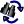

Menú Editar: Deshacer
Menú Editar: Deshacer
Deshace el/los últimos cambios hechos al archivo que se está editando. La cantidad de niveles de deshacer depende de la memoria disponible. El movimiento del cursor, la selección de un segmento de código, el plegado y demás cambios visuales no son salvados como cambios para deshacer, sólo son salvados los cambios que efectivamente modifiquen el contenido del archivo.
Temas relacionados: Menú Edición: Rehacer
Menú Editar: Rehacer
Rehace el/los últimos cambios deshechos al archivo que se está editando. La cantidad de niveles de Rehacer depende de la memoria disponible.
Temas relacionados: Menú Edición: Deshacer
Menú Editar: Cortar
Corta la selección actual. Es decir, coloca el texto seleccionado en el portapapeles y luego lo elimina del código.
Temas relacionados: Menú Edición: Copiar , Menú Edición: Pegar
Menú Editar: Copiar
Copia la selección actual. Es decir, copiar el texto seleccionado en el portapapeles.
Temas relacionados: Menú Edición: Cortar , Menú Edición: Pegar
Menú Editar: Pegar
Pega el contenido del portapapeles en el archivo actual en la posición donde se encuentra el cursor, reemplazando al texto seleccionado si lo hubiese.
Temas relacionados: Menú Edición: Cortar , Menú Edición: Copiar
Menú Editar: Mover hacia arriba
Mueve el conjunto de lineas que abarca la selección una línea hacia arriba. Es decir, equivale a cortar el bloque y pegarlo una línea antes. Si no hay selección, mueve la línea actual del cursor.
Temas relacionados: Menú Edición: Mover hacia abajo
Menú Editar: Mover hacia abajo
Mueve el conjunto de lineas que abarca la selección una línea hacia abajo. Es decir, equivale a cortar el bloque y pegarlo una línea después. Si no hay selección, mueve la línea actual del cursor.
Temas relacionados: Menú Edición: Mover hacia arriba
Menú Editar: Duplicar Lineas
Copia la/las linea(s) seleccionada(s) nuevamente a continuación de las mismas. Sólo se copian lineas completas, aunque éstas no estén completamente seleccionadas. Si no hay ninguna selección, duplica la linea actual del cursor.
Temas relacionados: Menú Edicion: Eliminar Lineas
Menú Editar: Eliminar Lineas
Elimina la/las linea(s) seleccionada(s). Sólo se eliminan lineas completas, aunque éstas no estén completamente seleccionadas. Si no hay ninguna selección, elimina la linea actual del cursor.
Temas relacionados: Menú Edicion: Duplicar Lineas
 Menú Editar: Ir a Funcion/Clase/Metodo
Menú Editar: Ir a Funcion/Clase/Metodo
Muestra un cuadro de diálogo que permite ingresar parte del nombre de un método, una clase o una función para dirijirse rápidamente a su declaración en el área de código. La busqueda diferencia mayúsculas de minúsculas y se basa en la información recopilada en el árbol de símbolos, por lo que el mismo debe estar actualizado.
Temas relacionados: Menú Edicion: Ir a Archivo..., Menú Edicion: Ir a Linea..., Árbol de Símbolos
Menú Editar: Ir a Archivo
Muestra un cuadro de diálogo que permite ingresar parte del nombre de un archivo y seleccionar uno de las posibles coincidencias para abrirlo rápidamente en el área de código. Para la busqueda no se distinguen mayúsculas de minúsculas. Si se está trabajando en un proyecto, los archivos entre los que se busca para conformar la lista son los pertenecientes al proyecto, de lo contrario se busca en todos los archivos abiertos.
Temas relacionados: Menú Edicion: Ir a Funcion/Clase/Metodo..., Menú Edicion: Ir a Linea...
Menú Editar: Ir a Linea
Muestra un cuadro de diálogo que permite ingresar un número de línea para desplazar el cursor y la vista directamente hacia el comienzo de la misma.
los archivos abiertos.
Temas relacionados: Menú Edicion: Ir a Archivo..., Menú Edicion: Ir a Funcion/Clase/Metodo...
Menú Editar: Buscar...
Muestra un cuadro de diálogo que permite buscar una cadena dentro del archivo que se está editando actualmente.
Temas relacionados: Buscar Siguiente, Buscar Anterior, Reemplazar...
Menú Editar: Buscar Anterior
Repite la última búsqueda realizada en sentido inverso. Es decir, comienza a buscar a partir de la posición del cursor hacia atrás. Si llega al comienzo y no se encontró la cadena buscada, busca desde el final del archivo hasta la posición del cursor. Si no se había realizado ninguna búsqueda anteriormente, su comportamiento equivale al de Buscar....
Temas relacionados: Buscar, Buscar Anterior, Reemplazar...
Menú Editar: Buscar Siguiente
Repite la última búsqueda realizada. Es decir, comienza a buscar a partir de la posición del cursor hacia adelante. Si llega al finale del archivo y no se encontró la cadena buscada, busca desde el comienzo hasta la posición del cursor. Si no se había realizado ninguna búsqueda anteriormente, su comportamiento equivale al de Buscar....
Temas relacionados: Buscar..., Buscar Anterior, Reemplazar...

Menú Editar: Reemplazar...
Muestra un cuadro de diálogo que permite buscar una o o todas las ocurrencias de cadena dentro del archivo que se está editando actualmente y sustituirla por otra.
Temas relacionados: Buscar Siguiente, Buscar Anterior, Buscar...
Menú Editar: Insertar #include Correspondiente
Asumiendo que la palabra sobre la cual se encuentra el cursor es el nombre de una macro, función o clase, ZinjaI tratará de encontrar el archivo de cabecera en donde la misma está declarada y agregar la linea #include correspondiente al fuente actual. Además, si el archivo es una de las librerías estandar de C++ agregará tambien la declaración "using namespace std".
 Menú Editar: Comentar
Menú Editar: Comentar
Comenta la/las linea(s) seleccionada(s). Si no hay ninguna selección, comenta la linea actual del cursor. Comentar equivale a agregar los caracteres // y un espacio al comienzo de la linea. Si la linea ya estaba comentada, estos caracteres se agregan igual, con lo cual se puede "anidar" comentarios, evitando así descomentar un comentario verdadero al descomentar un bloque de código previamente comentado. Notar que se comenta lineas completas y no parte de ellas, aunque la selección no abarque toda la linea.
Temas relacionados: Menú Edicion: Descomentar
 Menú Editar: Descomentar
Menú Editar: Descomentar
Descomenta la/las linea(s) seleccionada(s). Si no hay ninguna selección, descomenta la linea actual del cursor. Descomentar equivale a eliminar los caracteres // del comienzo de la linea. Si la linea no estaba comentada con // descomentar no tiene ningun efecto.
Temas relacionados: Menú Edicion: Comentar
Menú Editar: Indentar Bloque
Arregla el indentado de un bloque de código. Esto es, agrega o quita tabs según sea necesario en cada línea. Las reglas con las cuales arregla este identado son las mismas que rigen para el Indentado Inteligente.
Temas relacionados: Indentado Inteligente
Menú Editar: Seleccionar Bloque
Selecciona todo el contenido del bloque de código en el cual está posicionado el cursor. En este caso, se considera bloque a una segmento de código encerrado entre paréntesis, corchetes o llaves. Cuando los bloques se anidan, esta opción selecciona el bloque más interno. El cursor puede estar posicionado en cualquier parte del mismo. La selección abarca también los caracteres que delimitan el bloque (paréntesis, corchetes o llaves).
Temas relacionados: Menú Edicion: Seleccionar Todo
Menú Editar: Seleccionar Todo
Selecciona todo el contenido del archivo que se está editando actualmente.
Temas relacionados: Menú Edicion: Seleccionar Bloque
Menú Editar: Resaltar Linea(s)/Quitar Resaltado
Permite resaltar o eliminar el resaltado de una o más líneas. El resaltado no tiene un significado interno para ZinjaI, sino que es para uso exclusivo del usuario (como marcador por ejemplo). El resaltado se observa como un cambio de color en el fondo de la linea. Para resaltar una o mas lineas se las debe seleccionar y utilizar esta opción. Para eliminar el resaltado se debe realizar el mismo procedimiento (también con esta opción). Si no hay ninguna linea seleccionada se resaltará o eliminará el resaltado de la línea en donde esté actualemente el cursor.
Temas relacionados: Menú Edicion: Resaltar Linea(s)
Menú Editar: Buscar Resaltado
Mueve el cursor a la próxima línea resaltada.
Temas relacionados: Menú Edicion: Resaltar Linea(s), Menú Edicion: Ir a Linea
Menú Editar: Listar lineas resaltadas
Genera una lista con hipervínculos a todas las lineas resaltadas de todos los archivos de un proyecto (o de todos los archivos abiertos si no hay proyecto), y lo muestra en el panel inferior de Ayuda Rápida/Búsqueda.